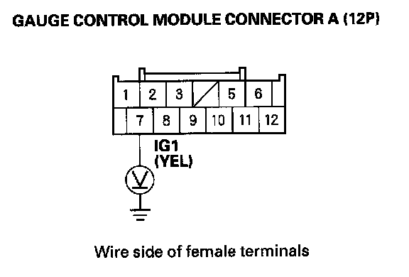

B1177
DTC B1177: Battery Voltage Abnormal1. Clear the DTCs with the HDS.
2. Turn the ignition switch OFF, and then back ON (II).
3. Check for DTCs with the HDS.
Is DTCs B1177 indicated?
YES - Go to step 8.
NO - Go to step 4.
4. Clear the DTCs with the HDS.
5. Turn the ignition switch OFF, and then back ON (II).
6. Crank the engine.
7. Check for DTCs with the HDS.
Is DTCs B1177 indicated?
YES - Go to step 8.
NO - Intermittent failure, the gauge control module and power supply voltage (IG1) that is supplied to the gauge control module are OK at this time. The battery may have been discharged, and recovered.
8. Check the battery and the charging system.
Are the battery condition normal and the charging system OK?
YES - Go to step 9.
NO - The battery needs a recharge or replacement, or the charging system needs to repair.
9. Turn the ignition switch ON (II).

10. With the gauge control module connector A (12P) still connected, measure the voltage between the gauge control module connector A (12P) No. 7 terminal and body ground.
Is the voltage above 7.5 V?
YES - Replace the gauge control module.
NO - Repair open or high resistance in the IG1 line between the ignition switch and the gauge control module.